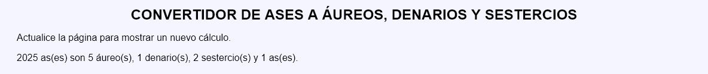

Convertidor de ases a áureos, denarios y sestercios - Comentarios
- El áureo, el denario, el sestercio y el as son algunas de las monedas utilizadas en época del primer emperador romano César Augusto.
- Un áureo equivalía a 25 denarios, un denario equivalía a 4 sestercios y un sestercio equivalía a 4 ases.
- Capturas de pantalla de ejemplo:

